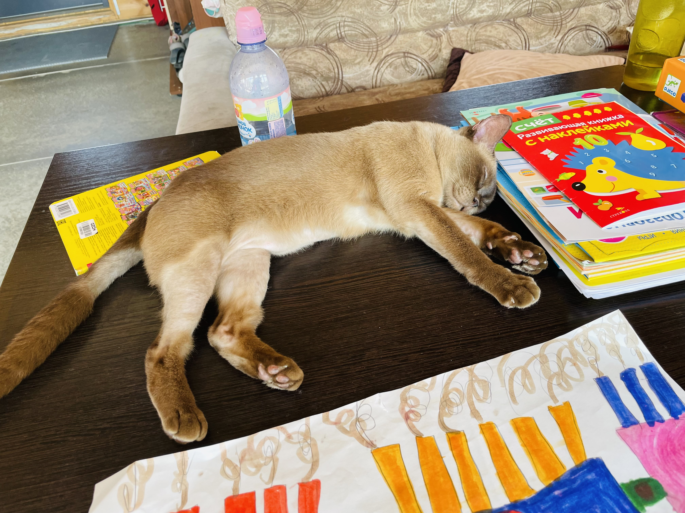
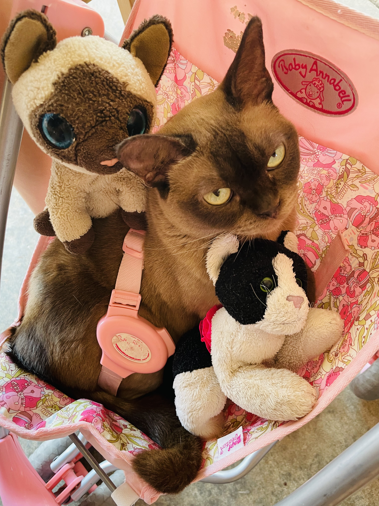
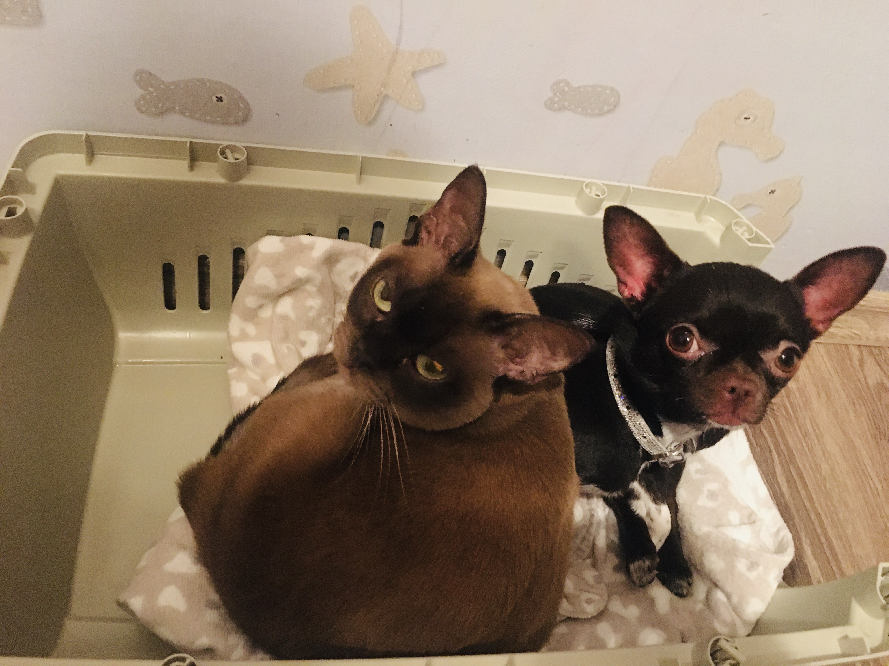

Точное происхождение и возраст данной породы не известен, отсчет истории породы в Европе и США ведется с 1930 года, когда заводчик сиамских кошек Джозеф Томпсон получил в подарок кота шоколадного окраса, привезенного с западного побережья Бирмы. Кот по кличке Вонг Мау заинтересовал Томпсона и он решил использовать его в разведении, скрестив с сиамской кошкой, имеющей темно-коричневые отметины. Из первого полученного помета для дальнейшего разведения были отобраны котята, унаследовавшие окрас Вонг Мау, именно они и стали прародителями современной бурманской кошки.
В 1957 году порода получила свое окончательное признание фелинологами.
[1]
Достоинства породы:

(1)

(2)

(3)

(4)

(5)

(6)

(7)
- Небольшой размер;
- Высокий интеллект;
- Дружелюбный характер;
- Гипоаллергенная шерсть;
- Знает толк в еде;
- Предана хозяину;
- Ладит с другими животными.
Контакты заводчика:
Перейти вверх страницы